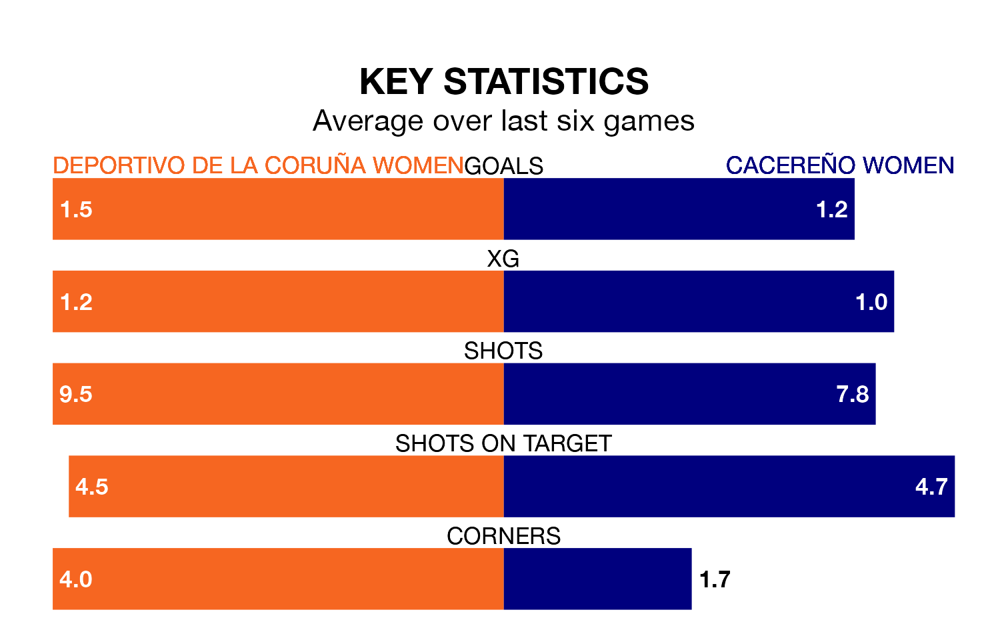

Cacereño Women travel to Deportivo de La Coruña Women on early Sunday in the Primera Federación Femenina.
The visitors come into the game on the back of a draw in their last match, having tied with Barcelona II Women 0-0 at home.
Deportivo de La Coruña, meanwhile, won their last match, 1-0 against Athletic Club II Women.
With 38 goals in 24 games so far this season, Deportivo de La Coruña are the league's third-highest scorers with 1.6 goals per game. And they are conceding fewer than average, letting in 20 goals at a rate of 0.8 per game.
Cacereño, meanwhile, are below average scorers, with 1.1 goals per game, compared to a league average of 1.2. They have conceded 1.6 goals per game.
The hosts are second in the table after 24 games, of which they have won 15 and drawn seven, earning 52 points.
The away team are eight places behind Deportivo de La Coruña in 10th, with eight wins and four draws putting them on 28 points.
Deportivo de La Coruña are in reasonable form in the Primera Federación Femenina, with three wins and two draws from their last six games.
And also with three wins and two draws over that period, Cacereño's form is identical – they have both taken 11 points from 18.
Updated: 11:31 (UTC), 15/04/24